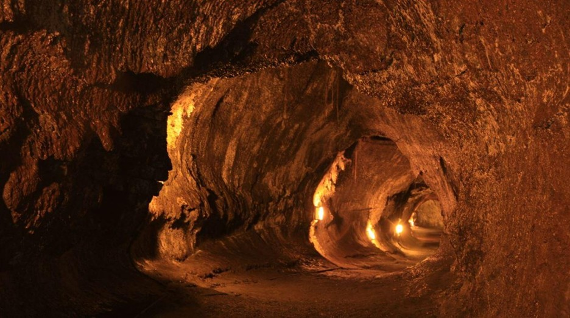

Nāhuku (Thurston Lava Tube)

Nāhuku is one of the most visited sites in Hawaiʻi Volcanoes National Park — a lava tube located in the rainforest just above Kīlauea’s caldera. Thousands walk through it each day, yet few know its deeper story: a Hawaiian place with its own name, cultural meanings, and history before its later association with newspaper publisher Lorrin A. Thurston. The tube formed centuries ago during a high-volume pāhoehoe eruption, leaving behind a long, hollow channel that once carried molten lava toward the sea. Today it serves as both a geological wonder and a reminder of the layered history of Kīlauea.
Nāhuku literally means “the protuberances” or “the bumps,” referring to the lava formations on the tube’s ceiling and walls.
Nāhuku sits within the lands of Kīlauea, an area tied to Pele, goddess of volcanoes, fire, and lightning, and to generations of Hawaiian chant, ceremony, and travel. The tube itself likely formed approximately 500 years ago. While not a major settlement, the surrounding rainforest and uplands were important for gathering plants, bird hunting, and travel between the summit region and lower Puna.
Native Hawaiian guides led aliʻi and foreign travelers across the caldera through the 1800s. In the late 19th and early 20th centuries, the region entered a new phase of visibility through the efforts of Lorrin A. Thurston, a lawyer, newspaper publisher, and political figure whose modern legacy is complicated. Thurston was a leading advocate for preserving Kīlauea and Haleakalā as national parks, using his political connections and Pacific Commercial Advertiser to promote conservation and tourism.
Prior to these efforts, he played a central role in the political upheavals that weakened the Hawaiian Kingdom, contributing to the Bayonet Constitution and supporting the overthrow of Queen Liliʻuokalani — actions that make his legacy contentious.
As tourism expanded in the 1910s–1920s, Territorial officials promoted the lava tube as a visitor attraction and affixed Thurston’s name to the site in recognition of his park advocacy. It entered Hawaiʻi National Park upon its founding in 1916.
The Hawaiian name Nāhuku never disappeared locally, but was overshadowed for decades by the government signage and naming conventions.
Today Nāhuku is one of the most accessible geologic sites in the park, visited by more than a million people annually. Its rainforest entry, illuminated interior, and paved trail make it a centerpiece of the Kīlauea Visitor District.
Nāhuku endures as a meeting point of geology, culture, and memory, a Hawaiian name still spoken inside a place carved by fire and shaped by time. By restoring and using its traditional name, we continue a connection to the land that predates the park itself.